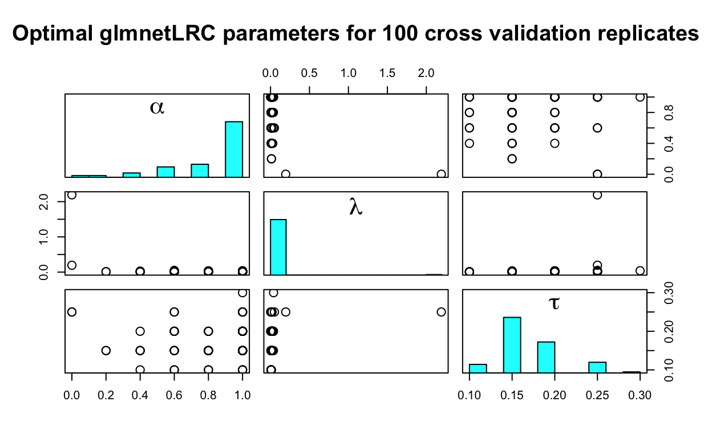

The glmnetLRC package enables lasso and elastic-net logistic regression classification (LRC) with an arbitrary loss function. It makes it easy to construct a binary classifier from virtually any number of quantitative predictors that will assign an example, or observation, to one of two classes.
glmnetLRC extends the glmnet package by making it possible to train lasso or elastic-net LRC’s using a customized, discrete loss function to measure the classification error. This allows users to assign unique loss values to false positive and false negative errors. The logistic regression parameter estimates are obtained by maximizing the elastic-net penalized likelihood function that contains several tuning parameters. These tuning parameters are estimated by minimizing the expected loss, which is calculated using cross validation.
You can find the standard help files for package functions by following the bold blue links.
–Landon Sego and Alexander Venzin
Begin by installing dependencies from CRAN:
install.packages(c("devtools", "glmnet", "plyr"))The Smisc package (which is imported by glmnetLRC) contains C code and requires compilation. To do this
With the compilation tools in place, you can now install the Smisc and glmnetLRC packages from the PNNL github site as follows:
devtools::install_github("pnnl/Smisc")
devtools::install_github("pnnl/glmnetLRC")Now load the package as usual:
library(glmnetLRC)The methods in the glmnetLRC package were originally implemented to automate the process of determining the curation quality of mass spectrometry samples (Amidan, et al 2014). Those same data will be used here to demonstrate how to train your own classifier. In the sections that follow, we show how to use the glmnetLRC package to train LRC models, extract coefficients, predict the binary class of new observations, summarize the performance of those predictions, and create diagnostic plots.
Let’s begin by loading the package and the training data:
# Load the VOrbitrap Shewanella QC data
data(traindata)
# A view of first two rows and first 12 columns
traindata[1:2, 1:12] Instrument_Category Instrument Dataset_ID Acq_Time_Start Acq_Length
pt701 VOrbitrap VOrbiETD03 251690 12/31/2011 98
pt702 VOrbitrap VOrbiETD03 251706 1/1/2012 98
Dataset Dataset_Type
pt701 QC_Shew_11_06_col2A_30Dec11_Cougar_11-10-11 HMS-MSn
pt702 QC_Shew_11_06_col2C_30Dec11_Cougar_11-10-11 HMS-MSn
Curated_Quality XIC_WideFrac XIC_FWHM_Q1 XIC_FWHM_Q2 XIC_FWHM_Q3
pt701 good 0.297090 19.3820 21.1900 24.3149
pt702 good 0.305519 19.3785 21.1812 24.3262# Columns 9 to 96 contain various measures of dataset quality that
# we will use to predict the "Curated_Quality"
predictors <- as.matrix(traindata[,9:96])We fit the LRC model by calling glmnetLRC(), which requires a binary response variable, coded as a factor. The order in which the response variable is coded is important. Specifically, the class we want to predict with the greatest sensitivity should be encoded as the second level. To illustrate how this is done, consider the Shewanella QC data, where the objective is to be sensitive to predicting poor datasets. Hence we code poor last, as follows:
response <- factor(traindata$Curated_Quality,
levels = c("good", "poor"),
labels = c("good", "poor"))
levels(response)[1] "good" "poor"Using lossMatrix(), we can define a discrete loss matrix. For the curation of dataset quality, predicting good when the dataset is poor is considerably worse (Loss = 5) than predicting poor when the dataset is good (Loss = 1). Correct predictions have zero loss:
# Define the loss matrix
lM <- lossMatrix(c("good","good","poor","poor"),
c("good","poor","good","poor"),
c( 0, 1, 5, 0))
# Observe the structure of the loss matrix
lM Predicted.good Predicted.poor
Truth.good 0 1
Truth.poor 5 0To train an elastic-net model, the user needs to supply a handful of arguments to glmnetLRC(). The mandatory arguments are the true class labels, truthLabels (which, in this case, is, is the response object we created above) and the matrix of predictor variables, predictors. Noteworthy additional arguments include
lossMat, if you want something other than 0-1 loss;tauVec, a vector of potential values of the threshold parameter τ ∈ (0, 1) that are used to dichotomize the predicted probabilities from the logistic regression into two class labels;alphaVec, a vector of potential values of the elastic-net mixing parameter α ∈ [0, 1], which governs the tradeoff between the two regularization penalties. When α = 0, L2 regularization (the ridge penalty) is used, and when α = 1, L1 regularization (the lasso penalty) is used;cvFolds, the number of cross validation folds;cvReps, the number of times the cross validation process is repeated with a different random partition of the data; andnJobs, the number of parallel jobs to run during the training process.Heavier sampling of tauVec or alphaVec (i.e., sequences of greater length) leads to increased computation time, but more of the parameter space will be sampled, potentially leading to a better classifier.
We now call glmnetLRC(). Be advised that if you are actually running the code shown below, it will take a while. Fewer values of alphaVec or tauVec and a smaller value of cvReps will make it run faster.
# Set the number of cores to be one less than the number available
njobs <- max(1, parallel::detectCores() - 1)
# Fit the LRC model
glmnetLRC_fit <- glmnetLRC(response, predictors, lossMat = lM,
estimateLoss = TRUE, nJobs = njobs)The call to glmnetLRC() uses cross validation to solve for the optimal parameter settings (α, λ, τ) that minimize the expected loss for the elastic-net LRC. Printing the resulting object shows the median value for the parameters over the cross validation replicates, as well as the average and standard deviation of the expected loss values calculated for each cross validation replicate:
print(glmnetLRC_fit)The optimal parameter values for the elastic-net logistic regression fit:
Df %Dev alpha lambda tau mean.ExpectedLoss sd.ExpectedLoss
[1,] 12 0.7343156 1 0.0140946 0.15 0.1553846 0.02144056We can also extract the non-zero coefficients of the elastic-net logistic regression model that was created using the optimal values of α and λ (which were shown by the call to the print() method above):
coef(glmnetLRC_fit) (Intercept) XIC_WideFrac XIC_Height_Q3 MS1_TIC_Q3 MS1_TIC_Q4
9.025824e+00 -2.624710e+01 1.678408e+00 7.354373e-02 2.669031e-01
MS2_Count MS2_Density_Q1 C_4A IS_1A MS1_2A
-6.683437e-05 -1.325541e-03 7.124788e-02 8.513326e-03 9.438797e-04
P_1A P_1B P_2B
-5.924279e-02 1.249349e-02 -6.508943e-04 Now that the classifier has been properly trained and the optimal parameters have been identified, we are interested in making predictions for new data observations. This requires the elastic-net regression model (the output from glmnetLRC()) and the set of new observations to be predicted, newdata. Note that newdata must contain all the columns (with equivalent names) that were used to train the LRC. If true labels are available in newdata, the column containing these true class labels can be specified via the truthCol argument. Additionally, one may wish to carry through a subset of the explanatory variables in newdata. These columns are indicated using keepCols. True labels are not required to make predictions—but they are required to compute performance metrics (sensitivity, specificity, etc.) for the LRC. We begin by testing the classifier by predicting the data used to train it:
# Predict the training data
predictTrain <- predict(glmnetLRC_fit, traindata,
truthCol = "Curated_Quality", keepCols = 1:2)
# Look at beginning of the predicted data. Note the extra columns that were
# kept: "Instrument_Category" and "Instrument"
head(predictTrain) PredictClass Curated_Quality Instrument_Category Instrument
pt701 poor good VOrbitrap VOrbiETD03
pt702 good good VOrbitrap VOrbiETD03
pt703 good good VOrbitrap VOrbiETD03
pt704 poor good VOrbitrap VOrbiETD03
pt706 poor poor VOrbitrap VOrbiETD02
pt707 poor poor VOrbitrap VOrbiETD02We can summarize the performance of the classifier predictions with a call to the summary() method. The performance metrics are oriented in terms of being sensitive to predicting a poor dataset. Thus, a false positive is predicting a dataset to be poor when it is good, and a false negative is predicting a dataset to be good when it is poor. This orientation resulted from us setting poor as the second level in response.
# Summarize the performance of the new classifier in terms of a variety of metrics:
summary(predictTrain) poor
sensitivity 0.97979798
specificity 0.90265487
false negative rate 0.02020202
false positive rate 0.09734513
accuracy 0.92615385Now let’s bring in some new data and examine the performance of the classifier:
# Load the data for testing
data(testdata)
# Create table observing the true number of good/poor items
with(testdata, table(Curated_Quality))Curated_Quality
good poor
38 61 # Predict new data
predictTest <- predict(glmnetLRC_fit, testdata, truthCol = "Curated_Quality")
# Look at the first few rows
head(predictTest) PredictClass Curated_Quality
931 poor good
1449 good good
1467 good good
1468 good good
1470 good good
1501 good good# Summarize the output of predicting the test data
summary(predictTest) poor
sensitivity 0.95081967
specificity 0.84210526
false negative rate 0.04918033
false positive rate 0.15789474
accuracy 0.90909091If we don’t include a truth column in the call to predict(), the summary() method counts the number of observations classified to each category:
summary(predict(glmnetLRC_fit, testdata)) PredictClass
good:35
poor:64 Finally, we would like to get a sense of the distribution of the tuning parameters that were chosen during the cross validation phase. The plot() method produces a 3 × 3 scatterplot matrix of the optimal triples (α, λ, τ) associated with the selected logistic regression model from each cross validation replicate. Therefore, each point represents the optimal estimate of (α, λ, τ) for a given cross validation replicate. The univariate distribution of each parameter is plotted on the diagonal of the scatterplot matrix. Ideally, the distributions of the parameters will be tight over the cross validation replicates, indicating that the choice of (α, λ, τ) is stable regardless of the particular random partition used for cross validation.
plot(glmnetLRC_fit)
A mathematical description the details in the glmnetLRC package can be found here.
Please cite the glmnetLRC package using the following reference:
Sego LH, Venzin AM, Ramey JA. 2016. glmnetLRC: Lasso and Elastic-Net Logistic Regression Classification (LRC) with an arbitrary loss function in R. Pacific Northwest National Laboratory. http://pnnl.github.io/glmnetLRC.